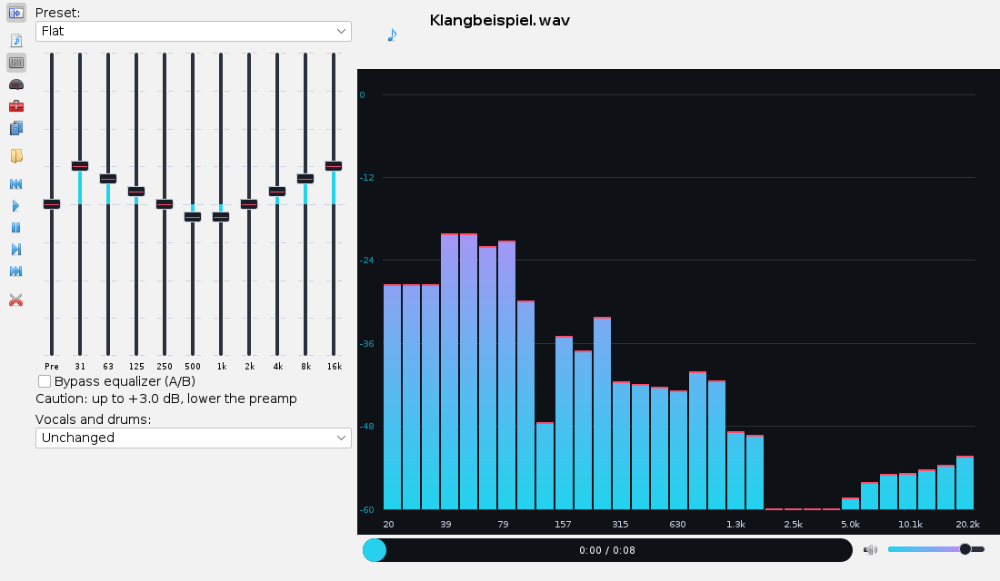
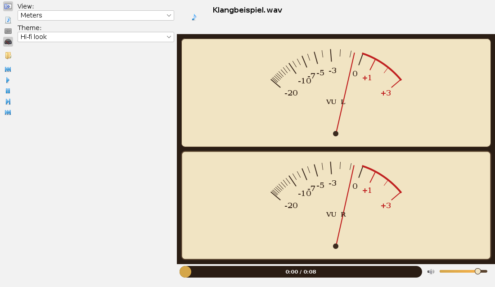
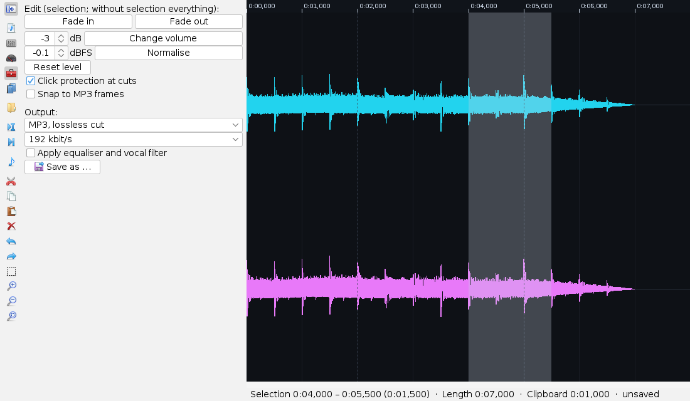
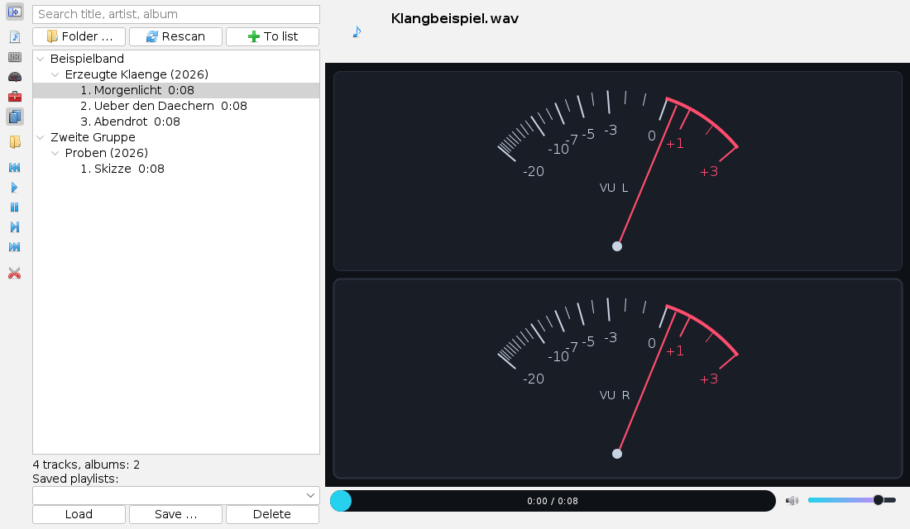

Operating the audio app
Operation page, as of 04.10.2026. How to open and play tracks, set the equaliser and the vocal filter, switch displays and themes, cut in the editor and use the library. The pictures are screenshots of the app with a generated sound example.
The window
Open the app from the Applications menu with Audio abspielen und schneiden (play and cut audio) or with Alt+L. On the left is the vertical sidebar with the cards and the playback buttons, on the right the title, the large display, the timeline and the volume.

The sidebar buttons, from the top: show or hide the sidebar, the cards playlist, equaliser and view, then open, previous track, play, pause, stop, next track and the scissors, which switch to the editor. Each button names its task when the mouse rests on it.
Opening and playing tracks
- Open selects one or more files (MP3, MP2, WAV, AAC/M4A, FLAC). They are appended to the playlist; the first of them plays at once.
- In the playlist card a double-click plays a track; the context menu removes it from the list.
- A click in the timeline jumps to that position, dragging scrubs. The slider to its right sets the volume.
- Header: title, artist, album and year from the ID3 tags, the cover on the left. Without tags the file name is shown.
Equaliser and vocal filter
The equaliser card has ten sliders for the bands from 31 Hz to 16 kHz and, to their left, the preamp, all in steps of 0.1 dB up to ±12 dB. The fill of each slider shows the distance from 0 dB.
- Preset sets all bands at once (Linear resets everything).
- Raising bands can make the signal clip. The line below the sliders then names the highest boost; lower the preamp by that amount.
- Bypass equaliser (A/B) switches smoothly to the unchanged signal for comparison.
- Vocals and drums: Remove vocals and isolate vocals come twice. The simple version (mid/side) cancels what lies in the centre and in the voice band; an instrument panned hard to one side stays at −3 dB. The version with masks decides for every frequency point whether it is central and tonal and separates much more sharply, at the cost of computing time and about 0.1 s of look-ahead. Plus isolate drums and without drums (tones against hits). Everything works fully only on stereo; reverb and backing vocals stay in the accompaniment.
All settings apply to every following track and are kept across sessions.
Displays and themes
The view card selects the display and the theme.


| Display | What you see |
|---|---|
| Spectrum | Level in 31 third-octave bands, 0 dB = full-scale sine; the marks briefly hold the peak. |
| Needle meters | VU meter per channel, 0 VU = −18 dBFS, sluggish like a real instrument. |
| Oscilloscope | Waveform of both channels, standing still by triggering on the zero crossing. |
| Waterfall | Spectrum over time, newest at the top; bright means loud. Tones appear as vertical lines, beats as horizontal ones. |
| Goniometer | Stereo image: a vertical line is mono, width means stereo, a horizontal line out of phase. The bar below shows the correlation; a swing to the left (negative) warns of cancellation in mono playback. |
| Cover | The cover large with title and artist, plus a narrow spectrum. |
Cutting
The scissors in the sidebar switch to the editor and load the current track; the note symbol in their place leads back to playback. The first time, the file is read once completely so the waveform can draw every zoom level at once.

- Select: drag in the waveform. A click sets the marker; Shift+click extends the selection.
- Zoom: mouse wheel around the mouse position, the magnifiers in the sidebar or
+and−; the third magnifier fits the selection or the whole file. Scroll with Shift+mouse wheel or the scroll bar. Below about 256 samples per pixel the view shows the actual samples. - Cut: cut, copy, paste (at the marker; a selection is replaced) and delete. Undo and redo reach back 200 steps.
- Listen: "Play selection" plays the selection, without one from the marker; the space bar toggles between play and stop. A red line shows what is sounding now.
The file itself stays unchanged: the editor only keeps a list of cuts. The info line shows selection, new length and the clipboard content.
Editing and saving
The edit and output card (toolbox in the sidebar) opens with the editor. The level tools act on the selection, without a selection on everything:
- Fade in and fade out across the selection, change volume by an amount in dB, normalise to a peak in dBFS (default −0.1), reset level. Fades and levels move with every later cut and can be undone; the waveform shows them at once.
- Click protection at cuts: at every seam the sound fades out and in again for just under 3 ms, so a hard cut does not click.
- Snap to MP3 frames: selection and marker jump to multiples of 1152 samples (a good 26 ms at 44.1 kHz). Then lossless cutting keeps almost every frame bit-exact.
Under Output choose the format and write a new file with Save as …; the source file is never overwritten.
| Format | What happens |
|---|---|
| MP3, lossless cut | The original frames are kept unchanged. Only around each seam and in fades does the in-house encoder re-encode short bridges. Works only for MP3 sources (MPEG-1 Layer III) and without applied effects; otherwise everything is re-encoded, and the status line says so. |
| MP3, re-encoded | With the in-house encoder at the chosen bit rate or with variable bit rate (VBR, quality 2, 4 or 6): every frame gets as many bits as inaudible noise needs. VBR files carry a Xing header so that other players show duration and seek targets correctly. |
| WAV, 16 bit | Uncompressed. |
| EVAS, lossless | The in-house lossless format: every 16-bit sample comes back unchanged, for music usually at about half the WAV size. |
Apply equaliser and vocal filter writes the player's settings permanently into the file. After saving, the card names the result, for a lossless cut for example "6135 of 6443 frames kept unchanged, 3 bridges re-encoded".
Library
The library card (books in the sidebar) manages the music collection in a small database.

- Folder … adds a folder including subfolders. Tags (ID3) and duration are read without decoding the music. Rescan searches all added folders again: new and changed files are added, vanished ones drop out, unchanged ones are skipped.
- The tree orders by artist, album (with year) and track. The search field filters while typing by title, artist, album or file path.
- Double-click on a track, an album or an artist appends everything below it to the playlist and plays it; To list only appends.
- Saved playlists: Save … asks for a name and stores the current list, Load takes a saved one, Delete asks first. Files that no longer exist drop out on loading.
The database lives in the user folder under .envisionz/audio. How often a track was played is counted.
Track info
The Track info card (label with pen in the sidebar) shows title, artist, album, year, track, genre and cover of the loaded file.
- Change fields; with the two picture buttons choose a cover from a JPEG or PNG file or remove it.
- Save asks once and writes the info into the file: into MP3, MP2 and AAC as ID3v2.4, into M4A as iTunes tags, into FLAC as Vorbis comments. Other entries of the file are kept.
- The audio stays byte for byte the same. Writing goes first to a sibling file; only if it reads back without errors does it replace the original. If anything fails, the file stays unchanged and the status line says why.
- Reset brings back what the file holds. WAV cannot hold track info; the card says so and disables the fields.
Internet radio
The Radio card (radio in the sidebar) plays stations from the internet. It starts switched off and only shows where to switch it on: App settings → Security → Network access. There are two switches, “Allow internet radio” and “Query station directory”. As long as they are off, the app does not touch the network.
- Address: enter the address of a station or a playlist (M3U, PLS) and start it with the play button or the Enter key.
- Search: with the directory switched on, search by station name; results show format, bitrate and country. Only MP3 and AAC stations are listed.
- My stations: the star saves the selected station or removes it again. Double-click plays.
- The station name and the current title appear at the top, as plain text. Stop closes the connection.
Keyboard
In the editor: Ctrl+X, C, V cut, copy, paste; Del delete; Ctrl+Z undo, Ctrl+Y redo; Ctrl+A select all; space bar play and stop; + and − zoom.
All sliders can be moved with the arrow keys once they have focus; Home and End jump to the limits. The selectors in the cards follow the usual keys.